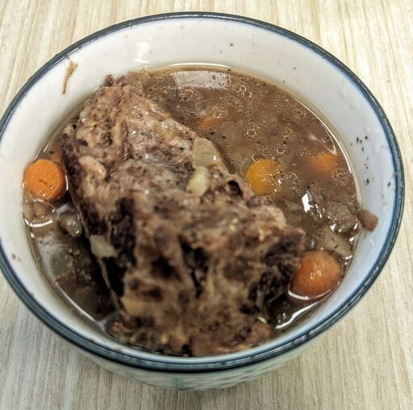

Hannah's Pot Roast

Ingredients
- 1 lb carrots
- 2 potatoes
- 1 onion
- 2 lb chuck roast
- 1/4 cup water
Recipe
- First, start by preparing all the ingredients. Chop the carrots and potatoes into bite sized pieces. Mince the onions
- Season the vegetables heftily
- Add everything into the crockpot
- Let cook for 6 hours on medium. Towards the end of the cooking session you should taste the vegetables to make sure they are seasoned appropriately.